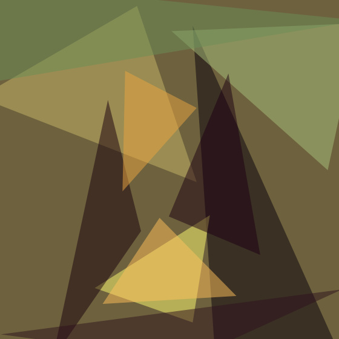
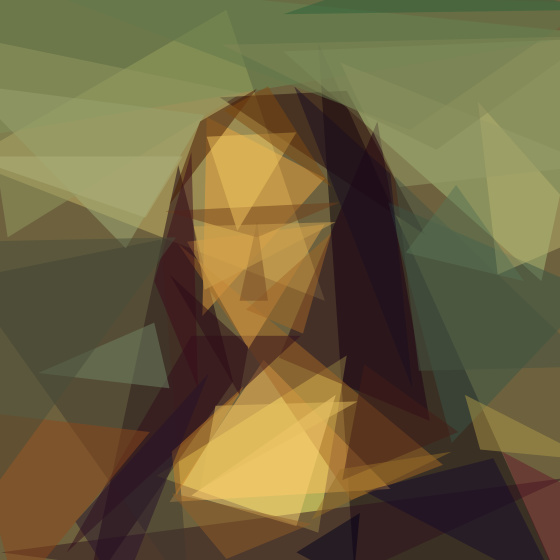
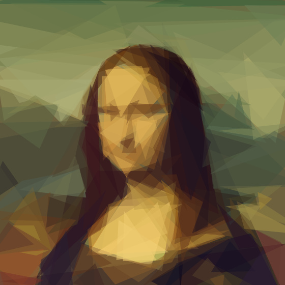
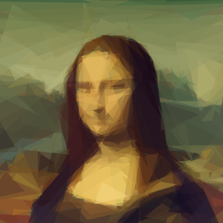
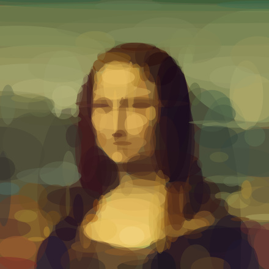
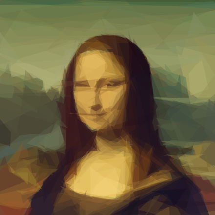
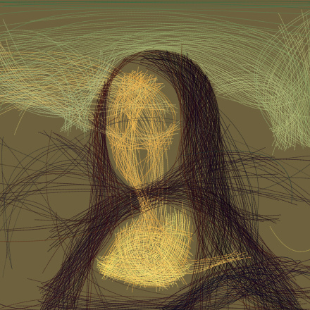

The Front Page
Every picture, rebuilt from a few hundred shapes.
Give Shapedraw a photograph and it paints it again using nothing but translucent triangles, ellipses, rectangles or curves. Each shape is placed where it does the most good, one at a time, until the likeness emerges.
The Studio
Drop in a picture of your own, or watch the sample.The Method
How a picture is taken apart and put back together.The program never sees the photograph as a subject, only as a field of colours to be matched. It begins with a blank canvas painted in the picture's average colour, and asks a single question over and over: of every shape I could add next, which one would bring this canvas closest to the original?
There are far too many possible shapes to try them all, so it guesses well instead. A thousand shapes are thrown down at random. For each, the best colour can be worked out directly, as an average of what lies beneath it, and the improvement it would make is measured as the change in pixel-by-pixel error. Only the pixels the shape covers need to be checked, which is what makes the whole enterprise fast.
A thousand guesses, a hundred small corrections, and the best of sixteen attempts. Then the next shape.
The most promising guess is then refined by hill climbing. A vertex is nudged, an angle turned, a radius stretched; any change that helps is kept, and the search stops once a hundred changes in a row have failed. Sixteen of these searches run side by side, spread across every core of your machine, and the overall winner is painted on.
The work happens on a small copy of the picture, 256 pixels across, where it can try around a million shapes a second. The finished shapes are recorded as geometry, so the final image can be drawn again at any size, as a sharp PNG or as an SVG that will print cleanly on a wall.



Fig. 1. The same portrait at four stages. The broad masses of colour arrive first; the face only resolves once the large errors are gone.
A Catalogue of Shapes
Two hundred of each, except where noted.
-m 1-m 2
-m 3-m 4-m 5-m 7
-m 8
-m 6Reference
For the command line and for your own code.Installation
Shapedraw needs Node 18 or newer and has no native dependencies.
git clone https://github.com/sankshitpandoh/shapedraw
cd shapedraw && npm install && npm link
shapedraw -i photo.jpg -o out.svg -n 300Layering
Flags are read in order, so shape types can be stacked: block in the composition with rectangles, then add detail with triangles.
shapedraw -i photo.jpg -o out.png \
-m 2 -n 50 -m 1 -n 250As a library
import { Model, thumbnail } from 'shapedraw';
import { createNodePool, loadImage } from 'shapedraw/node';
const target = thumbnail(loadImage('in.jpg'), 256);
const model = new Model(target, { pool: createNodePool() });
for (let i = 0; i < 200; i++) await model.step(1, 128, 0);
console.log(model.svg());
model.close();- -i path
- The picture to reproduce, PNG or JPEG.
- -o path
- Where to write it:
.png,.jpg,.svgor.gif. Repeatable. Put%din the name to keep every frame. - -n count
- How many shapes to add.
- -m mode
- 0 all, 1 triangles, 2 rectangles, 3 ellipses, 4 circles, 5 rotated rectangles, 6 beziers, 7 rotated ellipses, 8 polygons. Default 1.
- -a alpha
- Opacity of each shape, 1 to 255; 0 lets each shape choose. Default 128.
- -rep n
- Add up to n extra shapes per step with a cheaper search.
- -bg hex
- Starting colour. Defaults to the picture's average.
- -r size
- Working size for the search. Default 256.
- -s size
- Size of the finished image. Default 1024.
- -j n
- Worker threads. Defaults to every core.
- -nth n
- With
%doutputs, keep every nth frame. - -seed n
- Fix the random seed to repeat a result exactly.
- -v, -vv
- Report progress, or a great deal of it.